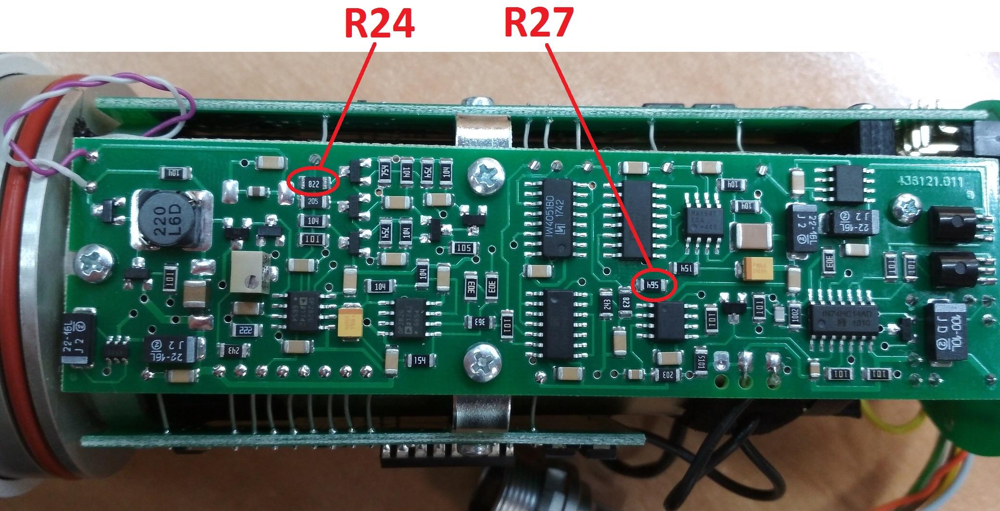

БДКГ-224
- Получить блоки детектирования, присвоить номера. НОМЕРА НЕ КЛЕИТЬ НА КОРПУС! В перечень записать дату, количество блоков отданных в настройку и ФИО регулировщика.
- Прошить блоки.
- Подключить БД к Background calibration.
- После первого включения выскочит ошибка "0х007С". Переподключиться, ошибка пропадет, появится другая ошибка: "0х0060". Переподключиться, ошибка пропадет, появится ещё другая ошибка: "0х0040" — зто ошибка времени/даты, не обращать внимания, продолжить настройку прибора.
- Записать внутренний номер и дату.
- Установить Uвыс резисторами R7 и подстроечным R8 на плате преобразователя напряжения по показаниям от
ОСГИ
137Cs (от КИ №2910 H'(10)≈8,3 мкЗв/ч) (если номинал R7
уменьшаем — показания
уменьшаются).

- Проконтролировать напряжение на подстроечном R8, записать в таблицу.
- Приработать не мене 24 часов.
- Перепроверить показания по 137Cs.
- Установить показания прибора от ОСГИ 109Cd резистором R24 на плате усилителя-преобразователя импульсов (на 12.2018г. от КИ №212 H'(10)≈0,3 мкЗв/ч) (если номинал R24 уменьшаем — показания увеличиваются).
- Проконтролировать напряжение на выводе №1 D4.1 на плате преобразователя напряжения в 1 и 3 диапазоне (напряжение на выводе №1 D4.1 в 3 диапазоне осуществляется регулировкой R24 на плате преобразователя, но не более 5 В).
- Проверить отсутствие показаний прибора во 2 и 3 диапазоне на фоне. Если во 2 диапазоне на фоне есть показания, то на плате преобразователя тока регулируем R5 (R5 уменьшаем на 1 номинал).
- Проконтролировать напряжение и форму пробоя светодиода.
- Измерить напряжения Uвыс в 1 и 3 диапазоне. Настроить 3-й диапазон с помощью R27 на плате преобразователя напряжения (R27 не более 1МОм). 
- Записать данные настройки в таблицу.
- Приработать не менее 40 часов.
- Перепроверить показания по 137Cs и 109Cd.
- Отдать на корпуса.
- Отдать на линейку.
- Проверить на герметичность. Записать в журнал настройки разницу (на сколько упала герметичность за 60 секунд). После успешного прохождения наклеить круглую наклейку "ГЕРМЕТИЧНО HERMETICALLY SEALED +" сбоку напротив ключа разъёма.
- Переход в режим усреднения. Запустить ATerminal, начальные настройки: скорость 19200 и Parity:Even.
Нажать ID код(посмотреть подключился ли прибор).
- Режим: Настройка: 01 05 00 07 ff 00
- Режим: Мобильный: 01 06 00 0e 00 02
- Предельная статистика: 01 06 00 0f 00 01 (выбираем нужную команду из списка и меняем последнюю цифру)
- Время усреднения: 01 06 00 10 02 58 (выбираем нужную команду из списка и меняем последние 3 цифры) Если потребуется по заказу:
- Скорость передачи: 01 06 00 47 00 05 (выбираем нужную команду из списка и меняем последнюю цифру)
- Нет бита четности: 01 06 00 48 00 03
- AutoBaud запрещен: 06 00 4a 00 01
Все команды сделаны кликабельными, при клике по команде её содержимое копируется в буфер обмена - Установить дату (месяц и год) соответствующую дате отгрузки (по контракту)
- Сделать протокол поверки или калибровочный сертификат
Непосредственно перед поставкой (за 1-2 дня)!!!
Перепроверить герметичность и сравнить полученную разницу за 60 секунд с записанной в журнале
настройки (после первой проверки). Если отличается в 2 раза - отдать на сборку для более объёмной
заливки силиконом.